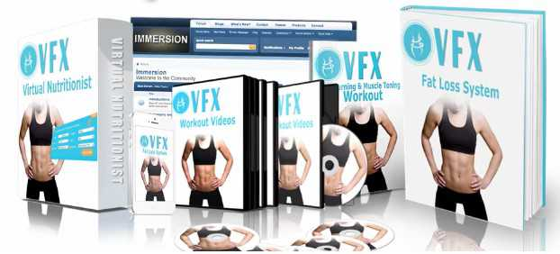
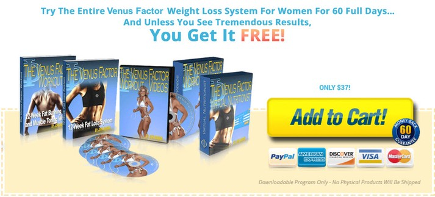

VFX Body Review - Helping Women Lose Weight Naturally - Venus Factor Xtreme
Already Decided?
That's great! Click the button on your right and take the action now.
Venus Factor Xtreme is a weight loss program that helps women to slim down their waistline by increasing the speed of their metabolism.
What is Venus Factor Xtreme?
Losing weight can sometimes be a difficult endeavor, but it is a journey that all women embark on throughout their life. Everyone wants the luxury of having a slim waistline and access to all of their “skinny” clothes in the closet, but actually getting down to a weight you prefer is difficult at times. Even if you think that you’re eating and exercising the right way, you may be missing a critical piece of the weight-loss puzzle. That’s where Venus Factor Xtreme comes in.
Venus Factor Xtreme is a weight loss program that helps you boost your results by improving the function of your metabolism. Your metabolism controls every part of how the food you eat is turned into fuel, which means that you need to make sure it is active and brought up to speed to lose weight. This program is meant for any person that wants to lose at least 10lbs, and it is incredibly easy to follow.
Some people prefer to take an easier route to their perfect body, using surgery or liposuction to eliminate the weight from their body. However, these procedures are incredibly expensive, and only help in one way – eliminating fat. Without the right knowledge and discipline, you will continue to gain back the weight over and over again, since the issues were not corrected. By following along with a program like Venus Factor Xtreme, you can help to stimulate your metabolism to lose weight and keep it off.
Who Is It For?
This program is ideal for women who are wanting to lose weight naturally. There are diet and exercise guides introduced in the Venus Factor, which all contribute to the fulfillment of these purposes. Whether you are an adult or elderly, you will find this program effective in providing your needs of having a slimmer and healthier body. However, it is important to consult your doctor first before starting with any new diet plan to ensure your safety, as well as the effectiveness of the program.
Venus Factor Xtreme (VFX) Body System has 4 Main Parts:
Custom Nutritional Software - This recommends daily and weekly recommended calorie intake based on your body and weight loss goals as well as your food preferences.
Nutrition Manual - This includes custom meal plans based on your taste preferences and budget, as well as in addition to having an advanced education section that’s designed to meet your body's nutritional needs.
140+ Premium Video Coaching/Workout Lessons - These are designed to help you learn proper form as well as how you should exercise when. The program offers you a whole body conditioning and helps with your muscle toning. It's important to exercise your different muscles just right so that your body looks completely symmetrical and normal - but looking sexy! Best best part is this can be done in the comfort and familiarity of your own home.
Immersion - This is a community of other like minded driven people with goals they want to reach. One of the most overlooked ways to get in shape (or anything) is accountability partners and being around other like minded people. Immersion will really help you to doo the best you can.

Pros:
No Restrictions on Food - The most exciting thing about the Venus Factor is the absence of strict dieting, which is a complete waste of time for those who are looking to slim down. In fact, this program makes it simple and stress-free for anyone to lose weight since there are no restrictions on food or long hours of workouts required to attain a desirable body. Thus, you will not feel deprived of food, and your body is also not restricted from receiving much-needed nutrients from what you eat. Many people who have tried this product were glad to know that could still enjoy their favorite food and not feel guilty about it.
Designed Specifically for Women - Men and women have different metabolic needs. So, if you are a woman who wants to boost your metabolism, you will need to use a technique designed for females to achieve the results you want. This is primarily what the Venus Factor focuses on, which is a 12-week plan including a series of steps that will secure the metabolic requirements of women. You will not feel any sense of weakness or loss of energy as you become more aware of what to eat at the right time, as well as exercises that are suitable for you. Surprisingly, women who are into this program are able to enjoy their favorite foods and lose weight at the same time.
Efficient System - For as little as 12 weeks, you should be able to notice significant improvements on your physical appearance. This is how long the program goes, and it never fails to impress users who have tried and succeeded in their attempts to lose weight and have a slimmer body. For those who are looking to enhance their appearance without the long and grueling workouts, this product is a lifesaver as you can spare yourself from unnecessary waste of time and energy and just zero in on the ways to lose weight safely.
Utilizes the Power of Leptin - The Venus Factor puts into action the fat-burning powers of Leptin, a type of hormone. This was based on the research done by John Barban, the genius behind this product. By utilizing this hormone in burning fat quickly and more efficiently, people can meet their nutrient requirements and experience a great reduction on their weight naturally. Since women do not need to perform as much workouts that men normally do, they can focus more on meeting their nutrient and metabolic needs – and these are all explained and presented in detail in this program.

Cons:
Perhaps the only limitation of this program is the fact that some people want a faster way to lose weight, and there are those who do not want to wait for 12 weeks to see results. However, if you think about it, there is no such thing as an overnight result for any weight loss products. If you want to do it safely and naturally, it will require a few weeks to see the outcome you want without causing any negative impacts to your health. This is what the Venus Factor aims to offer, and it is just what you can get upon purchasing this product.
What Are You Waiting For?
Your Purchase is Backed Up by 30 Days Money Back Guarantee. If You Don't Like The Product, Give It Back And You Will Be Refunded With No Questions Asked!
Final Verdict on Venus Factor Xtreme (VFX) Body
Overall I think it's a very helpful product for your quest to lose weight. I believe it is completely sound and scientifically proven, however you will still need to put into work to get the full effects. As far as a weight loss plan goes this is much less strenuous than some other products, it won't destroy your joints! Click below to see the official website.
Recent Post
Bow Legs No More - Looking for a Permanent Remedy for Bow Legs Without the Need for Surgery?
 Beauty/
Beauty/
Purely Primal Skincare Guide Review - Does It Really Work ?
 Beauty/
Beauty/
Ageless Body System - HOW TO BE INSTANTLY AGELESS?
 Addiction/
Addiction/
QUIT SMOKING MAGIC REVIEW
 Addiction/
Addiction/
ALCOHOL FREE FOREVER - HOW TO QUIT DRINKING TODAY FROM THE PRIVACY OF YOUR HOME